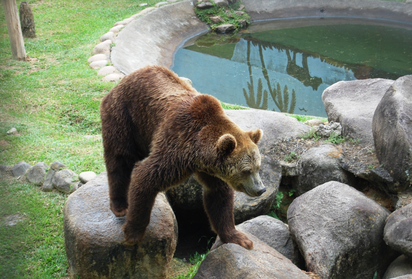
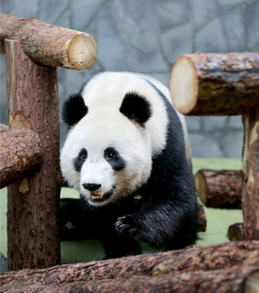
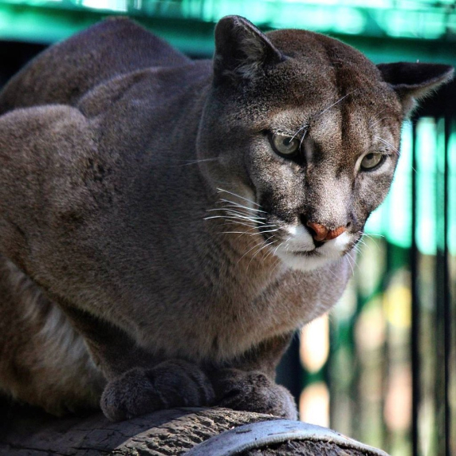

Не каждый из нас может позволить себе финансовую помощь кому-либо.
Но это не означает, что мы не можем совершать добрые дела!
Проект «Добрые дела» - это нефинансовая помощь животным зоопарка, которая заключается в принятии
от населения объектов для обогащения среды обитания животных в условиях неволи, обновления декораций
в вольерах и других нужд.
Животные зоопарка зачастую нуждаются в вещах, которые могут найтись в Вашем доме. И мы будем очень рады принять их в дар! Это могут быть разнообразные игрушки для животных, плотные спортивные мячи, пластиковые бочки, и т.д. С их помощью мы сможем сделать жизнь наших животных более яркой и насыщенной.


